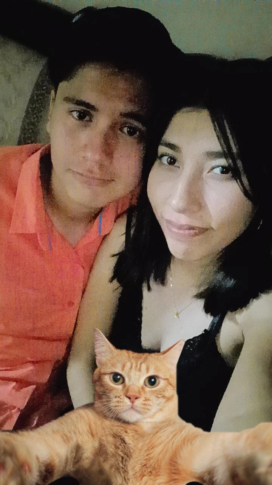

Holap corazón, espero y se encuentre muy bien la niña con la sonrisa más hermosa y radiante que existe en este mundo.
Se que han sido días un poquis pesados, pero a pesar de ello, no dejan de ser muy buenos, divertidos, increibles, maravillosos y muy especiales para ti. A pesar de las dificultades, malos ratos e incluso situaciones adversas, siempre te has levantado sin importar que, me encanta que sea de esa manera, pues sabes perfectamente que las cosas siempre van a mejorar sin importar que y este no es el final, verás que pronto saldrá ese rayito de sol que siempre te acompaña a donde quiera que vayas.
Nunca olvides la gran mujer que eres, siempre tan linda, amable, respetuosa, tan divertida, feliz (muy feliz), preciosa, sonriente, alocada, con el corazón más bello, noble y puro que jamás voy a conocer. Con una forma de ser que me encanta como no tienes idea, tan única en su especie y claro, tan especial y valiosa para mi, sabes perfectamente que estás en el lugar más enorme que hay en mi corazón.
Recuerda que a pesar de esos malos ratos, de todo lo malo se aprende algo bueno y se podría decir que cada día estamos en constante aprendizaje. También es otra cosita que me encanta de ti, que eres tan positiva, optimista y no dejas de ser esa mujer alegre como cuando te conocí.
Habrá días en los que no podremos levantarnos por nuestra propia cuenta, claro que es completamente valido el sentirnos así, pero sabes perfectamente que ahí estaremos para apoyarnos como siempre lo hemos hecho y no te preocupes si a veces estamos "rancios" como decimos, lo que más me importa es que te sientas muchisímo mejor corazón. Creeme que no hay día en el que no me preocupe por ti y claro que siempre lo haré, ¿sabes por qué?.
Desde que te conocí, me di cuenta de algo muy importante y me hace sentir muy especial, pues me siento como un minero cuando encuentra diamante. Te seguirás preguntando ¿pero que es? y te voy a decir neciaaa. Y no es más que ese enorme corazón que tienes, tengo ese privilegio de estar en tu vida y lo tuve al haberte conocido sin duda alguna.
Conforme pasaba el tiempo poco a poco te iba conociendo más y más, siempre con esas ganas de saber más de ti y hasta la fecha es algo que seguirá vigente en nosotros. Nos ibamos acercando, de platicar solo por mensaje a vernos con más frecuencia e incluso salir fuera de la escuela y eran cosas que jamás me imaginaba que sucederia. Como de ser simples desconocidos pasamos a crear un gran vinculo, una unión de dos corazones que sin buscarse se lograron encontrar y a pesar de ser muy diferentes, nos complementamos de una manera perfecta mi hermosisima novia.
Hemos disfrutado de tantos momentos que digo "Ay, son tan hermosos y los recordaré siempre con tanto amor", vamos a seguir haciendolo como mejor sabemos y aún nos faltan miles de cosas por hacer, tenemos toda una vida para hacerlas y para todo hay tiempo.
No solamente soy un sonso, yo soy el sonso más afortunado de todo el universo, pues tengo ese honor de que tu estés aquí, el que siempre dará lo mejor de si mismo, el que nunca te dejará sola, el que siempre estará dispuesto a probar y hacer cosas nuevas, el que tratará de sacarte una sonrisa, el que siempre te escuchará y apoyará sin importa que, el que siempre te amará con esa misma intensidad y que solo aumenta. Ese loco soy yo, confio muchisimo en ti y yo siempre te desearé lo mejor porque te lo mereces.
Estoy donde quiero estar y con la mujer a la que amo con todo mi corazón. Eres el amor de mi vida, mi Lily bonita, mi rayito de luz, una loba regia cosmopolitan y en verdad nunca dejes de sonreír, tu eres la que ilumina el sol siempre.
Nunca dejes de ser tu, te aseguro que vas a llegar muy lejos y se lo mucho que has luchado para estar en esta etapa de tu vida. Yo se muy bien que a veces la vida ha sido injusta, que uno se pregunta el por qué pasa lo que pasa y muchas cosas más. Pero te diré algo, si bien se aprendió del pasado, claro que también del presente y yo te aseguro que no volverás a pasar por algo así. Te conozco muy bien, pensar en ti siempre me trae maravillosos recuerdos y nunca olvido lo feliz que eres, la bonita vida que tienes, las personas que la conforman y ese mundo que no deja de brillar.
Mis ojos nunca dejarán de brillar al verte, con tanta admiración, orgullo, felicidad, pasión, amor, etc. Esto va más allá de las palabras, me encantas tal y como eres (fisica y mentalmente), me gustas muchisimo, te amo como no te puedes imaginar. No te vas a librar tan facil de mi ehh.
Se que es algo muy cortito, sencillo y demás. Pero todo es con mucho amor y para hacerte sentir un poquis mejor. Espero y te guste corazón.
Gracias por ser tú, por existir, por estar en mi vida y por hacerme tan feliz.